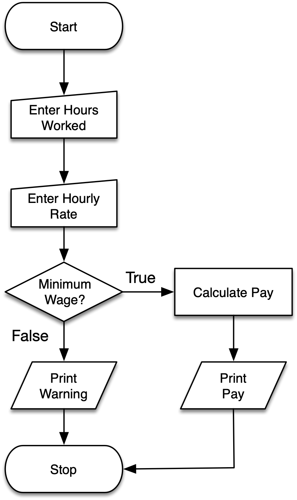
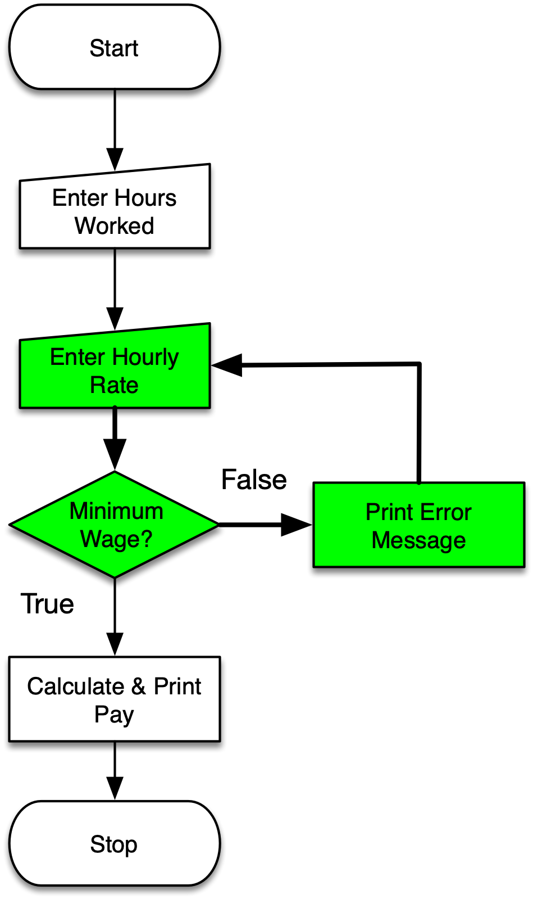

Control Structures 3
Loops & Iteration
Loops
Python programs are made up of a series of statements that execute in order.
Loops allow you to repeat a set of statements while a particular expression evaluates to True.

Why Loops?
Imagine that you want to print all the positive integers less than 10. You Would you want to do this for a million?
While Loops
Instead you could use a while loop with a variable counter. This is very useful if you want to print all the positive integers less than 1 million…
Infinite Loop
Break
The break keyword is used to break out of a loop. It can be useful in situations where the work inside a loop can stop prematurely, or because the loop is infinite.
iterate, v.
- transitive. To do (something) over again; to perform (an action) a second time, or reproduce (an effect); to repeat; to renew. Now rare.
- To say, mention, or assert again or repeatedly; to repeat.
- To make double or twofold; to duplicate. Obsolete. rare.
- intransitive. Mathematics. To employ iteration; to make repeated use of a formula by substituting in it each time the result of the previous application.
For Loops
The for loop lets you to iterate through a series of values. We’ll be learning more about lists in Module 8.
Loops In Loops
Imagine you want to print all possible consecutive rolls of a 6 sided dice:
Iteration and Functions
It’s often useful to combine loops with functions. For example: convert a list of temperatures from Fahrenheit to Celsius:

Review
- while can be used to construct a loop that will continue as long as a particular condition evaluates to True.
- for can be used to iterate through a set of values in a list. As will see it can be used to iterate through other things like files and rows in a database.
- loops/iterators can contain loops/iterators.
- functions and loops/iterators are super useful together.

